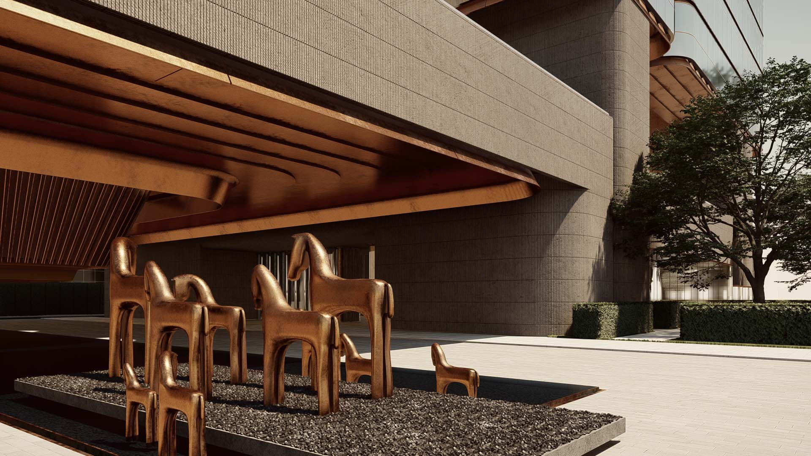
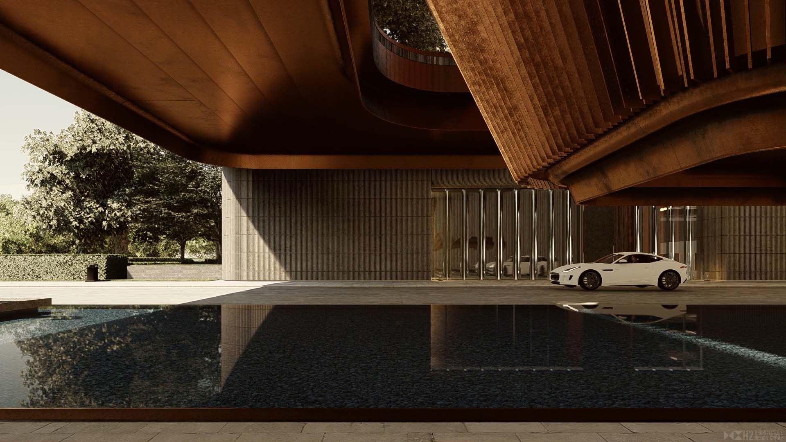

江苏 · 昆山
昆山康得思
H2 项目档案 · 2021
Langham Hospitality Group
全部作品
01项目介绍
项目说明保留英文档案版本。
As an important part of the advanced National Science and Innovation Complex, the hotel is positioned as a community-friendly and socially convenient city living room.
‘The Terrace’ and ‘The Foyer’ are the core features. The flexible composition of space and the maximization of outdoor area create a resort-feeling city hotel. By extracting the fragments and elements of industrial style, the hotel is designed in a modern exquisite language, providing a unique featured space. Explore the exquisite fashion life style, retain the unique spatial memory.


02资料
- 地点
- 江苏 · 昆山
- 源档案年份
- 2021
- 档案酒店集团
- Langham Hospitality Group
年份沿用原档案标注，并非经核实的竣工年份。源材料可能包含设计阶段图像。正式发布前，应确认现名称、项目状态、具体服务范围和图片署名。